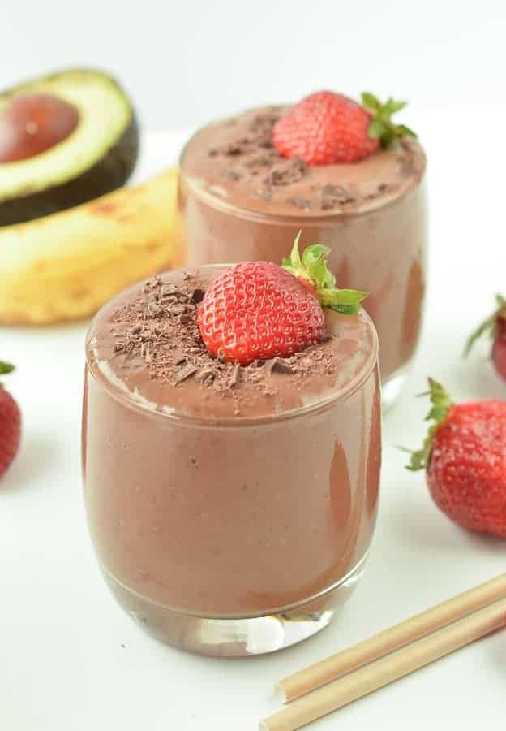

Chocolate Strawberry Banana Milkshake

Description
A wonderful strawberry and banana milkshake that can easily be adapted for
low-sugar diets. My mother got me started on this 20 years ago. I rarely
add sugar or sweetener, but I realize that some people enjoy a bit more
sweetness. You can substitute orange juice for milk if you like.
Ingredients
- 1 cup low-fat milk
- ½ cup frozen unsweetened strawberries
- ½ ripe banana
- 2 tablespoons powdered chocolate drink mix
- ½ teaspoon vanilla extract
- 2 teaspoons white sugar
Steps to follow
- In a blender combine milk, strawberries, banana, chocolate milk powder, vanilla, and sugar. Blend until smooth.